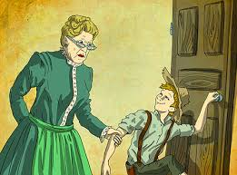

რომელია შენი საყვარელი წიგნი?
ჩემი საყვარელი წიგნი არის ტომ სოიერის თავგადასავალი
რატომ?
რადგან ეს წიგნი და მისი მთავარი პერსონაჟი ჩემთან ყველაზე ახლოსაა
რომელ წელს გამოიცა ეს წიგნი?
ეს წიგნი გამოიცა 1876 წელს

რა ჟანრისაა ეს წიგნი?
ეს წიგნი არის კომედიური ჟანრის
აღსაღნიშნავია ისიც რომ ეს წიგნი ავტორისგან რომანის დაწერის პირველი მცდელობა იყო
რატომ მოგწომს მთავარი პერსონაჟი?
იმიტომ რომ ამ პერსონაჟს შეუძლია რასაც მოინდომებს ის გააკეთოს
რა არის ამ პერსონაჟის უარყოფითი მხარე?
ამ პერსონაჟის უარყოფითი მხარეა მისი სიცელქე და უყურადღებლობა
რა კავშირშია ეს პერსონაჟი შენთან?
მეც სწორედ ესეთი უყურადღებლო ვარ რაღაც საკითხების მიმართ
მაგრამ თუ რამეს მიზნად დავისახავ ნებისმიერი გზით მას მივაღწევ
რომელ ისეტ მხარეს ხედავ ამ პერსონაჟში რაც არასდროს ეშლება
ერთგულება
ვინ არის ამ წიგნის ავტორი?
ამ წიგნის ავტორი არის გამოჩენილი ამერიკელი მწერალი მარკ ტვენი
რამე ხომ არ შეგიძლიათ გვიამბოთ ამ მწერარზე?
დიახ მარკ ტვენი დაიბადა 1835წელს
ხოლო გარდაიცვალა 1910წელს
ნაწარმოებები:
უფლისწული და მათხოვარი
ტომ სოიერის თავგადასავალი
ძაღლის ნაამბობი
ჰეკლბერი ფინის თავგადასავალი
მარკ ტვენი:

უფლისწული და მათხოვარი:

ჰეკლბერი ფინის თავგადასავალი:

ტომ სოიერი